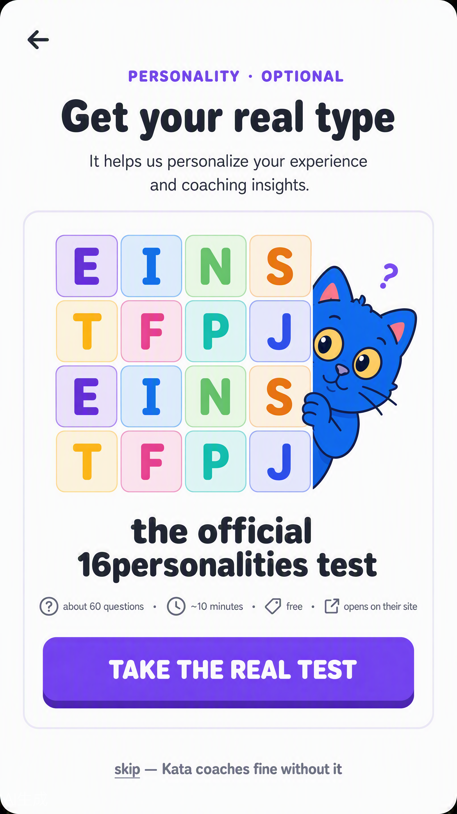
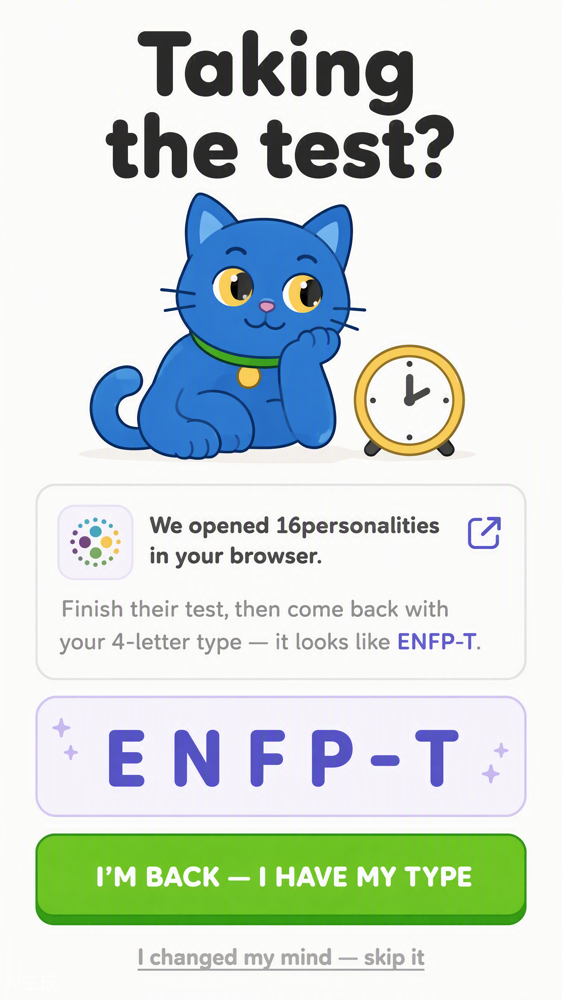
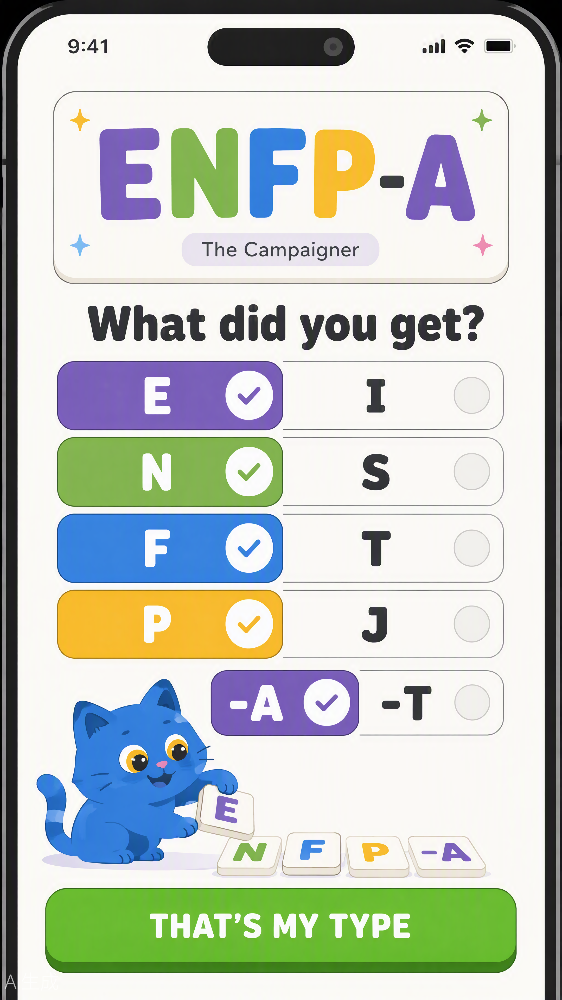
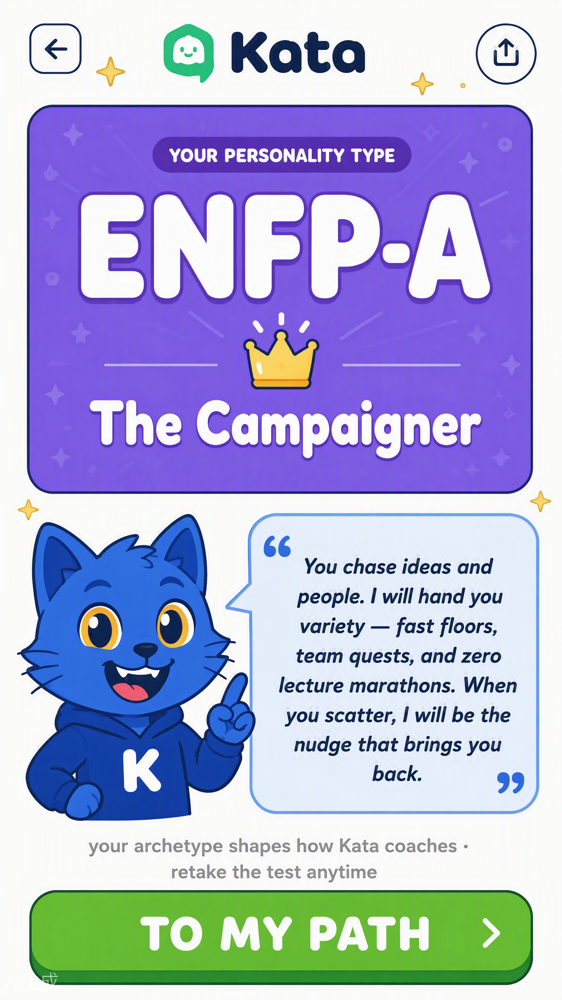

✓epic ↗
EPIC 1 · Authentication (flows 1–8) — locked
designs approved 2026-08-17 · contract written · 8 flows, 16 screens
Epic 1 · flows 1–8 — the designs
FLOW 1
The invite — SMS + email
no app screen · the real first touchBoth channels fire together at provisioning. SMS approved as-is; the email wears the 10x space brand: logo, giant warm heading, glowing violet CTA, "valid 7 days from issue".


FLOW 2
Splash → first open
RA-01A game-loader: brand + one rotating motivational tip for newcomers while the session checks. Offline: sad Kata + a sentimental joke + Retry as the only action.


FLOW 3
Login — tabs, source-aware
RA-02Big Kata. Phone/Email tabs; the tab defaults to the invite channel. CTA sleeps until the format is valid; invalid shows red + a helpful hint + a disabled button. SSO row deleted.


FLOW 4
Verify — OTP / link + failure states
RA-15 · RA-04Entering (auto-advance, self-submit at six), wrong code (red boxes, "not it — 2 tries left"), resend-ready (active button + 3 left today), and the email link-sent card marked as the email route, 7-day validity.


FLOW 5
Login failure → recovery
RA-06 · RA-07Not enrolled → coordinator line. Expired → fresh link in ten seconds. One recovery action each, no dead ends.


FLOW 6
Session expired → re-auth
RA-11Non-destructive: dimmed half-typed floor underneath, "Quick check it is you", the promise nothing was lost.

FLOW 7
Shared tablet → switcher
RA-08 · RA-09Two accounts one tap apart; switching never mixes or loses anyone's work.

FLOW 8
Warm start — returning user
RA-10Valid session skips login: brand ≤1s, "welcome back, Nino · 🔥 12" pill, syncing bar, straight into the path.

…in redline
EPIC 2 · Onboarding (flows 9–18) — in redline
30 screens rendered · awaiting your redline → lock → EPIC-02 contract
Epic 2 · flows 9–18 — the designs
FLOW 9
Meet Kata — her job, printed
RB-00Before any form, Kata says what she actually does — as a swipeable jobs carousel (Instagram-style), one job per card: quest nudges, class reminders, official updates, exam warnings, and the help button that lives in every flow.


FLOW 10
Your first 10 minutes — the roadmap
RB-01The setup as a candy-crush map that scales to any step count: 12+ nodes, scrollable — done green-checked, locked grey — the NEXT step glowing with a "NEXT" tag, and tapping a node opens a tooltip modal (title · est. time · START + confirm). Course access granted up front: content, schedule, your group, the processes.


FLOW 11
Pick your pace — informative, not tiers
RB-02The carousel stays, the tier branding is gone. Plain time options (~10/~20/~30/~60/~90+ min) with the same honest outcomes for everyone — the student picks the time that is honest, not a badge. Admin-configurable later.

FLOW 12
Choice summary + welcome rewards
RB-03The choice summarized with the honest rules AND the warning: changeable anytime, scoring follows investment + completed tasks, switching never costs the streak — ⚠ but each pace change moves your rating · free change available once a month. Gifts: +2 streak freezes, +50 aura points.

FLOW 13
Rating — chess.com model, leagues by rating
RB-04 · ratingEveryone starts at 1000. Learning, tasks, showing up push it up; skipped quizzes, missed lectures, silence pull it down. Leagues: Wooden · Iron · Bronze · Silver (everyone starts here) · Gold · Platinum · Obsidian. Exact scoring model documented by the team later.

FLOW 14
Placement quizzes — content + integrity
RB-05 · quizzesTwo things live here: the school-configured placement quiz, and the English check A2→C2 (set from back-office). Integrity rule: you may leave and resume — but never mid-quiz; over 1 minute away = inactivity error, the quiz closes, onboarding quizzes restart. Answers are never graded mid-quiz.


FLOW 15
The streak, honestly + the pet's scars
RB-06 · streakThe truth, no padding: complete daily activities or the streak resets to zero — streak freezes on your balance are the only automatic save. And it's just Rating (1000 at start), moving only with activity. Kata carries the consequence visibly: every broken streak leaves a scar on him — a freeze prevents it.


FLOW 16
Week contract + wave preference
RB-07Pick your contract days AND your wave (morning ☀ / evening 🌙). The note is honest: group waves are decided by administration — they'll try to consider your preference when forming groups.

FLOW 17
GitHub connect — conditional
RP-01Programming courses only (skipped for culinary/hospitality/management/short courses). The full connect flow: OAuth consent on github.com (read-only repos, listed permissions) → pick which repos count → linked ✓ (pushes from ANY device or client count — the webhook hears the repo, not the app) → first commit verified and +15⚡ credited, with the honest offline queue. Unlink anytime, under 5 seconds.


FLOW 18
Archetype — the REAL 16personalities test, connected
RB-12 · RB-13 · D-17Not our questions — their test is proprietary and legally off-limits to host. So the flow is the official connector: the card tells the truth (60 questions · ~10 min · free · opens on their site), the handoff holds your place while you take it, you come back with your 4 letters, a guided picker validates the type (ENFP-A), and Kata gives her personal read of The Campaigner. Skip stays one tap away — Kata coaches fine without it. Retake anytime.




Queued — locked until cooked
3
EPIC 3 · Daily loop
· roadmap home, floors, feedback, summary, offline, resume
queued4
EPIC 4 · Classroom
· dashboard, calendar, course, sessions, grades, exams, forms, attendance
queued5
EPIC 5 · Assignments
· detail, submit, status, graded
queued6
EPIC 6 · Events & careers
· feed, save, pin, apply
queued7
EPIC 7 · Social & league
· league, podium, friends, buddy, cohort feed
queued8
EPIC 8 · Progression & economy
· mistakes, review, quests, chests, shop, streak engine, boss, checkpoints
queued9
EPIC 9 · Outcomes
· assessment, certificate, DocFlow, statements, alumni
queued10
EPIC 10 · Settings & system
· settings, notifications, profile, reports, privacy, edge states
queued11
Build batches B1–B9
· the app itself on the existing LMS
queued12
Pilot → national rollout
· 10X first, then all Georgian VET colleges
queued